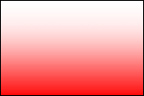
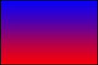
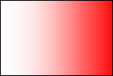
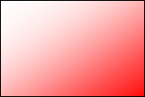
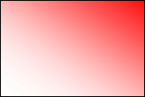
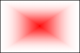
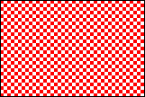
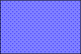
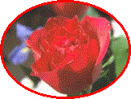

Back to top
Back to toptitle: Using the Fill Element description: This article describes using the Fill element of VML, a feature that is deprecated as of Windows Internet Explorer 9. ms.assetid: ed36601d-2e90-412e-ac3f-58324fac300d keywords:
This topic describes VML, a feature that is deprecated as of Windows Internet Explorer 9. Webpages and applications that rely on VML should be migrated to SVG or other widely supported standards.
[!Note]
As of December 2011, this topic has been archived. As a result, it is no longer actively maintained. For more information, see Archived Content. For information, recommendations, and guidance regarding the current version of Windows Internet Explorer, see Internet Explorer Developer Center.
Â
As you've learned, you can use the fillcolor property attribute of a predefined shape element -- such as <oval> , <line>, <polyline>, <curve>, <rect>, <roundrect>, <arc> -- to specify the color that is used to fill the shape. In this topic, we will illustrate how to draw a shape that is filled with more advanced effects.
You can place the <fill> sub-element inside the <shape>, or <shapetype>, or any predefined shape element to describe how to fill the shape. You can then use the property attributes of the <fill> sub-element to customize the fill effect, such as gradient fill, pattern fill, picture fill.
In this topic:
To draw a gradient-filled shape, you can set the type property attribute of the <fill> sub-element to "gradient" or "gradientRadial", and then specify other property attributes of the <fill> sub-element, such as method, color2, focus, and angle.
Examples:
To create a shape that is gradient-filled horizontally, you can set the type property attribute to "gradient", as shown in the following VML representation:

<v:rect style='width:120pt;height:80pt' fillcolor="red">
<v:fill type="gradient" />
</v:rect>
If you change the fillcolor property attribute of the shape, the shape is then gradient-filled with a different color. You can add a second color by specifying the color2 property attribute of the <fill> sub-element. For example, to create a shape that is gradient-filled in two colors, you can add a second color by specifying the color2 property attribute of the <fill> sub-element, as shown in the following VML representation:

<v:rect style='width:120pt;height:80pt' fillcolor="red">
<v:fill color2="blue" type="gradient" />
</v:rect>
You can set the method property attribute to "linear" or "sigma" or "any" or "none". The effect of the gradient is slightly different. Also, you can use the angle,focus,focussize, or focusposition property attribute to change how the gradient goes.
Examples:
Â
To create a shape that is gradient-filled vertically, you can set the angle property attribute to angle="-90", as shown in the following VML representation:

<v:rect style='width:120pt;height:80pt' fillcolor="red">
<v:fill method="linear sigma" angle="-90"
type="gradient" />
</v:rect>
To create a shape that is gradient-filled from diagonal moving up, you can set the angle property attribute to angle="-135", as shown in the following VML representation:

<v:rect style='width:120pt;height:80pt' fillcolor="red">
<v:fill method="linear sigma" angle="-135"
type="gradient" />
</v:rect>
To create a shape that is gradient-filled from diagonal moving down, you can set the angle property attribute to angle="-45", as shown in the following VML representation:

<v:rect style='width:120pt;height:80pt' fillcolor="red">
<v:fill method="linear sigma" angle="-45"
type="gradient" />
</v:rect>
To create a shape that is gradient-filled from the center, you can specify angle="-45" focus="100%" focusposition=".5, .5" focussize="0, 0" type="gradientRadial", as shown in the following VML representation:

<v:rect style='width:120pt;height:80pt' fillcolor="red">
<v:fill method="linear sigma" angle="-45"
focus="100%" focusposition=".5,.5" focussize="0,0"
type="gradientRadial" />
</v:rect>
To draw a pattern-filled shape, you can set the type property attribute of the <fill> sub-element to "pattern", and then specify other property attributes of the <fill> sub-element, such as src and color2.
Examples:
To create a shape that is filled with a pattern image, you can specify the type property attribute to "pattern", and point the src property attribute to the location of the pattern image file, as shown in the following VML representation:

<v:rect style='width:120pt;height:80pt' fillcolor="red">
<v:fill type="pattern" src="image1.gif"/>
</v:rect>
If you point the src property attribute to a different pattern file, you can create a shape that is filled with a different pattern. Also, you can change the color by specifying a different value for the fillcolor or color2 property attribute, as shown in the following VML representation:

<v:rect style='width:120pt;height:80pt' fillcolor="white">
<v:fill type="pattern" src="image2.gif"
color2="blue" />
</v:rect>
To draw a picture-filled shape, you can set the type property attribute of the <fill> sub-element to "frame", and then specify other property attributes of the <fill> sub-element, such as src and color2.
Examples:
To create a shape that is filled with a picture file, you can specify the type property attribute to "frame", and then point the src property attribute to the location of the picture file, as shown in the following VML representation:

<v:oval style='width:120pt;height:90pt' strokecolor="red"
strokeweight="2.5pt">
<v:fill type="frame" src="image1.jpg" />
</v:oval>
You can easily create a shape that is filled with a different picture by pointing the src property attribute to another file.
For more information about this element, see the VML specification .
Â
Â